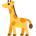

حرفا الذال والزاي
الدرس 1 من 6 — القراءة
درسنانتعلّم اليوم الحرفين ذ، ز. اضغط على الحرف لتسمع اسمه، ثمّ على المقاطع لتسمع صوته، ثمّ اقرأ الكلمات مقطعاً مقطعاً.
حرف الذال
اضغط واستمع: الحركات
اضغط واستمع: المقاطع الطويلة والساكنة
أشكال الحرف في الكلمة
ذفي أوّلها
ـذفي وسطها
ـذفي آخرها
ذِئْبٌ
ذُرَةٌ
ذُبَابَةٌ
حرف الزاي
اضغط واستمع: الحركات
اضغط واستمع: المقاطع الطويلة والساكنة
أشكال الحرف في الكلمة
زفي أوّلها
ـزفي وسطها
ـزفي آخرها

زَرَافَةٌ

زَهْرَةٌ
زَيْتُونٌ
أُطبّق
1اضغط 🔊 واسمع، ثمّ اختر المقطع الصحيح:
2اضغط 🔊 واسمع، ثمّ اختر المقطع الصحيح:
3اضغط 🔊 واسمع الكلمة: بأيّ حرف تبدأ؟
4اختر الصورة التي تبدأ بحرف ز:
5اضغط 🔊 واسمع، ثمّ اختر الحرف الذي تسمعه:
6اختر الصورة التي تبدأ بحرف ذ:
7اضغط 🔊 واسمع الكلمة: بأيّ حرف تبدأ؟
8اضغط 🔊 واسمع، ثمّ اختر الحرف الذي تسمعه:
إجابات صحيحة من أول محاولة:
أتمرّن أكثر
أستمع، ثمّ أكتب ما أسمع:
أستمع، ثمّ أكتب ما أسمع:
✓ أنهيتَ هذا الدرس
الرسوم: Twemoji (CC-BY 4.0) وFluent Emoji من Microsoft (MIT). الأصوات: صوت عربي اصطناعي.